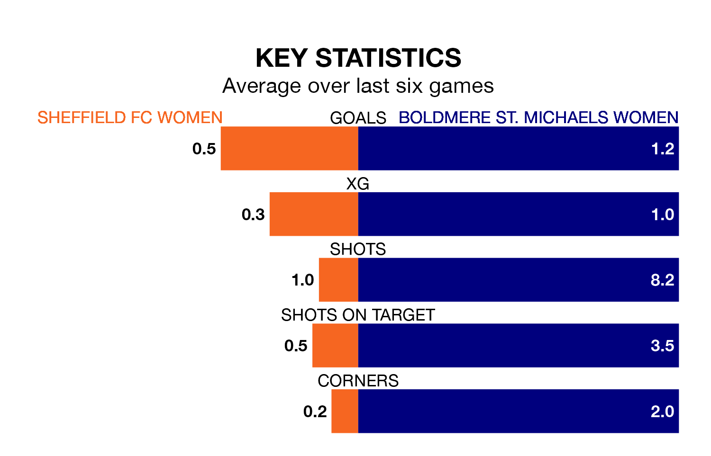

Relegation candidates Sheffield FC Women face a challenge against high-flying Boldmere St. Michaels Women on Sunday.
Sheffield FC Women are 11th in the Women's National League Division One – Midlands table, and have picked up just one win and five draws in their 17 games to date.
Boldmere St. Michaels, meanwhile, are fourth in the standings with 37 points, having won 12 and drawn one of their first 18 matches, and are 10 points behind table-toppers Sporting Khalsa Women.
Sheffield FC are in terrible form in the Women's National League Division One Midlands, with no wins and two draws from their last six games.
With three wins and a draw over that period, Boldmere St. Michaels's form is much better – they have taken 10 points from 18, compared to the home team's two.
With nine goals in 17 games so far this season, Sheffield FC are the league's lowest scorers with 0.5 goals per game. And they are conceding at an average rate, letting in 31 goals at a rate of 1.8 per game.
The visitors, meanwhile, are average scorers, with 1.8 goals per game. They have conceded 1.2 goals per game.
Sheffield FC's last match was on March 24, a 0-0 draw against Leafield Athletic Women.
Boldmere St. Michaels beat Notts County Women 3-1 last time out, also on March 24.
Updated: 16:41 (UTC), 04/04/24